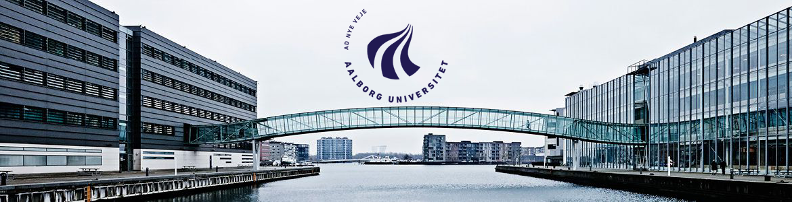

Acasă
Acasă Țări
Țări Catalog
Catalog Galerie foto
Galerie foto Experiente
Experiente Despre
DespreAalborg University



Descriere
Aalborg este un oraș al contrastelor, un oraș istoric cu o arhitectură medievală și, în același timp, cu un stil de viață modern și un ritm accelerat al lucrurilor. Faptul că un procent mare din populație este compus din studenți, confera orașului Aalborg o atmosfera unică de centru academic, plin de diversitate si energie.
Întemeiată în 1974, Aalborg University reprezintă o universitate distinctă. Particularitatea caestei instituții este dată de determinarea de a aborda inovativ atât metodele de predare, cât și activitatea de cercetare în domeniul thnologiilor medicale, comunicării wireless, energiei, informaticii, economiei inovative si studiilor comparative privind bunăstarea. Astfel, universitatea este una dintre cele mai avansate instituții din domeniul cercetării și al dezvoltării. Studenții au posibilitatea de a lucra cu studii de caz reale și de a se specializa într-o gamă largă de domenii.
Informații generale
Tara: Danemarca;
Limba de predare: engleza;
Ani de studiu: Bachelor: 3; Master: 2;
Inceput an: septembrie/februarie;
Burse: Nu;
Campusuri: Aalborg, Esbjerg, Copenhaga.
Cazare: 300-800 euro
Programe de licență:
BA in Art & Technology (in Aalborg) (note: restricted entry)
BSc in It, Communication and New Media (in Copenhagen) (note: restricted entry)
BSc in Medialogy (in Aalborg and in Copenhagen (note: restricted entry)
BSc in Sustainable Biotechnology (in Copenhagen) (note: restricted entry)
BSc in Economics and Business Administration (in Aalborg) (note: restricted entry)
BSc in Applied Industrial Electronics (in Esbjerg) (previously known as Electronics and Computer Engineering)
BSc in Chemical Engineering and Biotechnology (in Esbjerg)
BA in Language and International Studies in English (in Aalborg) (note: restricted entry)
BSc in Robotics (in Aalborg) (note restricted entry)
BSc in Manufacturing and Operations Engineering (in Copenhagen) (note: restricted entry)
Programe de masterat:
Acoustics and Audio Tech. (A)
Architecture (Architecture & Design) (A)
Biomedical Engineering & Informatics (A)
Building Energy Design (A) (disponibil din februarie 2015)
Chemical Engineering (E)
Chemistry (A)
China and Intl. Relations (A/Beijing)
Chinese Area Studies (Development and Intl. Relations/European Studies) (A)
Computer Science (IT) (A)
Control and Automation (A)
Culture, Communication and Globalisation (A)
Data Engineering (A)
Development and Intl. Relations (A)
Electric Power Systems and High Voltage Engineering (Energy Engineering) (A)
Electro-Mechanical Systems Design (A)
Embedded Software Systems (A)
Energy Engineering (A)
Entrepreneurial Engineering (A)
Environmental Engineering (A)
European Studies (A)
Global Gender Studies (Development and Intl. Relations/European Studies)
Global Innov. Mgmt. (joint programme) (A)
Global Mgmt. (Operations and Innov. Mgmt.) (C)
Global Refugee Studies (C)
Human Geography (Geography)(A)
Industrial Design (Architecture & Design) (A)
Information Architecture (A)
Innov., Knowledge and Econ. Dynamics (Econ.) (A)
Innov. Mgmt. (Econ. and Bus. Admin.) (Beijing)
Integrated Food Studies (C)
Intl. Bus. Econ. (Econ. and Bus. Admin.) (A)
Intl. Marketing (Econ. and Bus. Admin.) (A)
Lighting Design (C)
Mathematics (A)
Mechanical Design (E)
Mechatronic Control Engineering (Energy Engineering) (A)
Medialogy (C, A, E)
Media Mgmt. (Operations and Innov. Mgmt.) (C)
Medicine with Industrial Specialisation, A
Mobility and Urban Studies (Urban Design) (A) (starts September 2014)
Nanobiotech. (A)
Nanotech.
Networks and Distributed Systems (A)
Oil and Gas Tech. (E)
Operations and Innov. Mgmt. (A)
Operations and Supply Chain Mgmt. (A)
Power Electronics and Drives (Energy Engineering) (A)
Process Engineering and Combustion Tech. (Sustainable Energy Engineering) (E)
Risk and Safety Mgmt. (E)
Software Development (A)
Sound and Music Computing (A & C)
Surveying and Mapping (Surveying, Planning and Land Mgmt.) (A)
Sustainable Biotech. (C)
Sustainable Energy Engineering (E)
Techno-Anthropology (C, A)
Thermal Energy and Process Engineering (Energy Engineering) (A)
Tourism (A & C)
Urban Architecture (Urban Design) (A)
Urban Planning and Mgmt. (Urban, Energy and Environmental Planning) (A)
Vision, Graphics and Interactive Systems (A)
Water and Environment (A)
Wind Power Systems (Energy Engineering) (A)
Wireless Communication Systems (A)